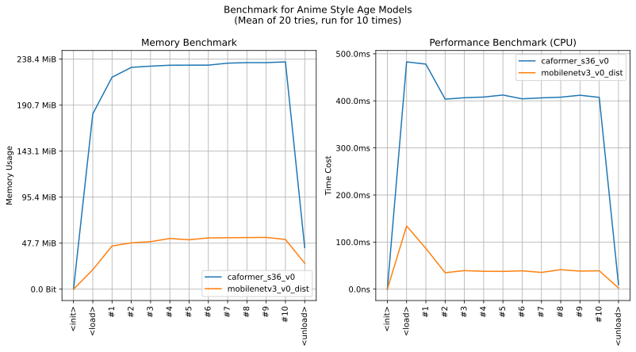

imgutils.validate.style_age¶
- Overview:
A model for classifying anime style_age images into 7 classes (
1970s-,1980s,1990s,2000s,2010s,2015s,2020s).The following are sample images for testing.

This is an overall benchmark of all the style_age classification models:
The models are hosted on huggingface - deepghs/anime_style_ages.
anime_style_age_score¶
-
imgutils.validate.style_age.anime_style_age_score(image: Union[str, os.PathLike, bytes, bytearray, BinaryIO, PIL.Image.Image], model_name: str = 'mobilenetv3_v0_dist') → Dict[str, float][source]¶ Get the scores for different types in an anime style age.
- Parameters:
image (ImageTyping) – The input image.
model_name (str) – The model name. Default is ‘mobilenetv3_v0_dist’.
- Returns:
A dictionary with type scores.
- Return type:
Dict[str, float]
- Examples::
>>> from imgutils.validate import anime_style_age_score >>> >>> anime_style_age_score('style_age/1970s-/1.jpg') {'1970s-': 0.9805465340614319, '1980s': 8.761269782553427e-06, '1990s': 0.0005044879508204758, '2000s': 0.01569165475666523, '2010s': 0.002850610064342618, '2015s': 0.00037849770160391927, '2020s': 1.9434612113400362e-05} >>> anime_style_age_score('style_age/1980s/5.jpg') {'1970s-': 9.053497342392802e-05, '1980s': 0.9992554783821106, '1990s': 0.0006490182713605464, '2000s': 2.8857468805654207e-06, '2010s': 4.317252262353577e-07, '2015s': 6.314484721769986e-07, '2020s': 1.0750001138148946e-06} >>> anime_style_age_score('style_age/1990s/9.jpg') {'1970s-': 1.706833609205205e-05, '1980s': 0.00034479793976061046, '1990s': 0.9995512366294861, '2000s': 4.391363472677767e-05, '2010s': 1.4607510820496827e-05, '2015s': 2.0679690351244062e-05, '2020s': 7.661913514311891e-06} >>> anime_style_age_score('style_age/2000s/13.jpg') {'1970s-': 3.757471131393686e-05, '1980s': 3.0744897230761126e-05, '1990s': 2.76177470368566e-05, '2000s': 0.9996387958526611, '2010s': 9.160279296338558e-05, '2015s': 0.00013228354509919882, '2020s': 4.1361367038916796e-05} >>> anime_style_age_score('style_age/2010s/17.jpg') {'1970s-': 7.464057489414699e-06, '1980s': 3.2412899599876255e-05, '1990s': 5.703883653040975e-05, '2000s': 9.127358498517424e-05, '2010s': 0.9973921775817871, '2015s': 0.0022309015039354563, '2020s': 0.00018872201326303184} >>> anime_style_age_score('style_age/2015s/21.jpg') {'1970s-': 3.780902943617548e-06, '1980s': 1.422096920578042e-05, '1990s': 1.638929097680375e-05, '2000s': 2.152203023797483e-06, '2010s': 0.00028818511054851115, '2015s': 0.9996094107627869, '2020s': 6.58777353237383e-05} >>> anime_style_age_score('style_age/2020s/25.jpg') {'1970s-': 1.9200742826797068e-05, '1980s': 0.00017117452807724476, '1990s': 9.518441947875544e-05, '2000s': 2.885544381570071e-05, '2010s': 1.4389253010449465e-05, '2015s': 3.1696006772108376e-05, '2020s': 0.9996393918991089}
anime_style_age¶
-
imgutils.validate.style_age.anime_style_age(image: Union[str, os.PathLike, bytes, bytearray, BinaryIO, PIL.Image.Image], model_name: str = 'mobilenetv3_v0_dist') → Tuple[str, float][source]¶ Get the primary anime style age type and its score.
- Parameters:
image (ImageTyping) – The input image.
model_name (str) – The model name. Default is ‘mobilenetv3_v0_dist’.
- Returns:
A tuple with the primary type and its score.
- Return type:
Tuple[str, float]
- Examples::
>>> from imgutils.validate import anime_style_age >>> >>> anime_style_age('style_age/1970s-/1.jpg') ('1970s-', 0.9805465340614319) >>> anime_style_age('style_age/1980s/5.jpg') ('1980s', 0.9992554783821106) >>> anime_style_age('style_age/1990s/9.jpg') ('1990s', 0.9995512366294861) >>> anime_style_age('style_age/2000s/13.jpg') ('2000s', 0.9996387958526611) >>> anime_style_age('style_age/2010s/17.jpg') ('2010s', 0.9973921775817871) >>> anime_style_age('style_age/2015s/21.jpg') ('2015s', 0.9996094107627869) >>> anime_style_age('style_age/2020s/25.jpg') ('2020s', 0.9996393918991089)